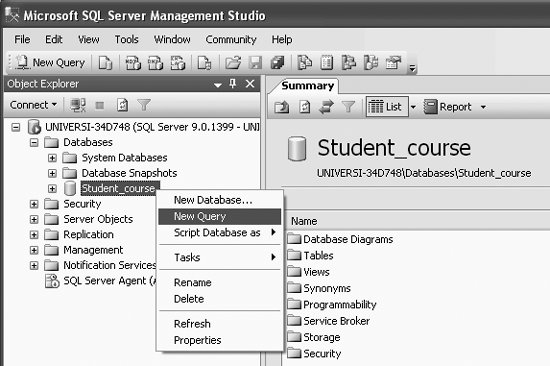
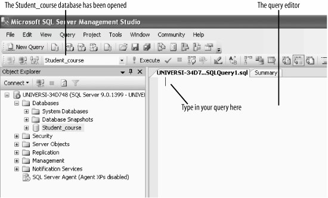
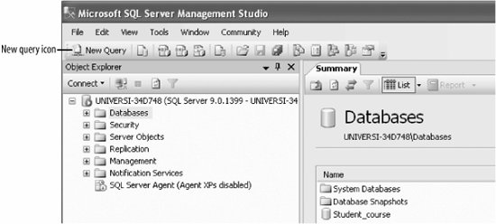
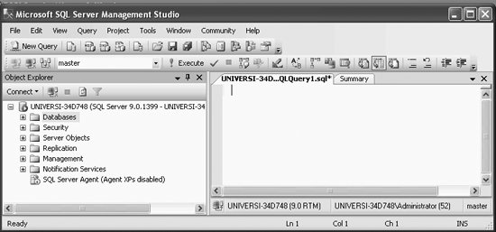
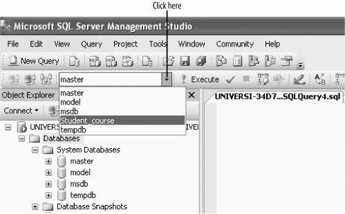
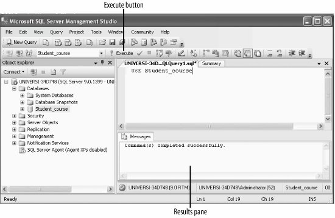

|
|
|
1.3. The Query EditorThe most important thing you do in SQL Server , or in any other database for that matter, is query the database. Queries in SQL Server are typed in the query editor. The query editor can be opened in two ways, as discussed in the following subsections: (a) by right-clicking, and (b) by using the New Query button. 1.3.1. Opening the Query Editor by Right-ClickingSelect the Student_course database and right-click, as shown in Figure 1-11. Select New Query. Figure 1-12 shows the query editor, which can be used to create queries and other SQL scripts and execute them against SQL Server databases. The first query will be called SQLQuery1.sql by default. Later we will show you how to change the name of the query when saving it. If the query editor is opened in this way, the Student_course database automatically becomes the database against which the queries are executed, because you initially selected Student_course and then right-clicked. If we want to work in our Student_course database, we have to make sure that the Student_course database is active. If the Student_course database is not active, we have to activate itwe show you how to do this in different ways in the following sections.
Figure 1-11. Opening the query editor
Figure 1-12. The query editor1.3.2. Opening the Query Editor Using the New Query ButtonYou can also open the query editor by selecting the New Query button from the top menu (leftmost icon), as shown in Figure 1-13.
Figure 1-13. Using the New Query iconIf you used the New Query icon from Figure 1-13 (without selecting the Student_course database), you will get Figure 1-14. Here, note that the Student_course database is not the active database; master is the active database, because SQL Server defaults to master.
Figure 1-14. The query screenBut we want to use the Student_course database that we just created, so we have to activate the Student_course database. Click on the drop-down icon of the Combo box beside master and select Student_course, as shown in Figure 1-15. This step activates or opens the Student_course database.
Figure 1-15. Selecting the Student_course database1.3.3. Opening or Activating the Database Using USEYou can also activate or open the Student_course database by typing in the following in the query editor (as shown in Figure 1-16):
USE Student_course
Figure 1-16. Using USEThen, click the Execute button (it is on the menu bar above the query editor screen). You will get the following message in the results pane (as shown in Figure 1-16):
Command(s) completed successfully
|
|
|
|